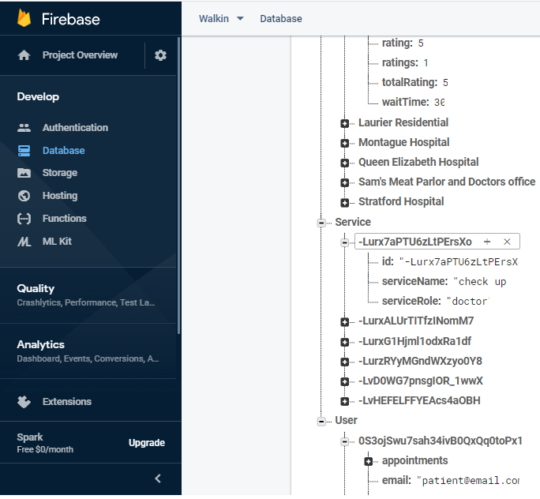
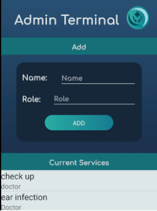
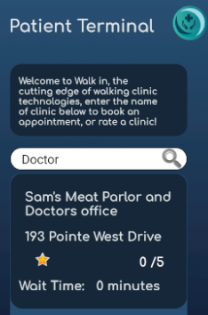

Including 3 account types, each being authenticated upon creation to have a proper username and password, this app allows a range of functionality. Clinics can create their account, advertise what they offer, and open slots for patients to book. Patients can log in, search for clinics by name or service, book appointments, and leave ratings. Admins can choose which services are possible to offer, delete accounts, and control the overall network [1 admin account].

Each login is authenticated through the FireStone FireBase Authentication System, which affirms that an entered email is valid, and then creates a registered account attached to it. The data for these accounts, as well as for all attributes of the app, are then stored in a custom database system. Skills Used: Authentication Implementation, App Design, Android Studio, Database Design and Implementation

With an immutable admin account, the application allows for one to remove or add potential services, as well as manage and remove users from the database. It includes an updated list of all Users and Clinics, taken from the online database system
A clinic registers with its information, and can then actively adjust which services they offer, as well as the times which patients can book in with a doctor. They have a rating, and a current wait time, and are actively updated in the search results based on their name and service they offer.

A patient has the ability to search for clinics, book an appointment in their available slots, and leave a rating for the clinic after doing so. The patient’s database contains stored appointments that they have made.